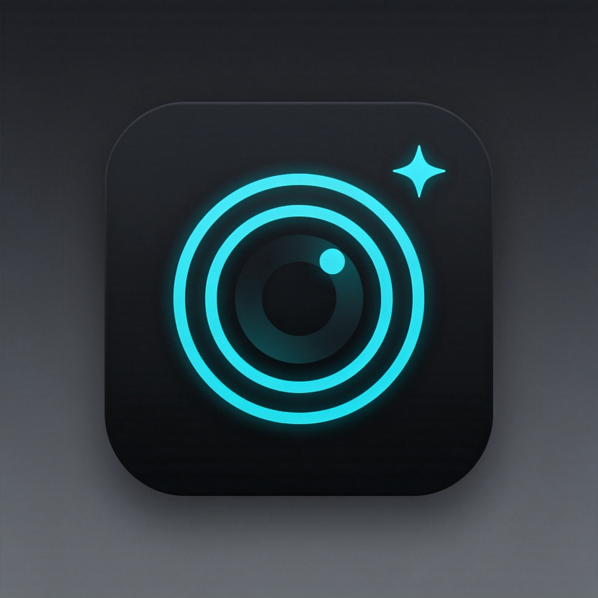

魔法相机 MAXUI
iOS 15–17.x · palera1n / Dopamine rootless · 虚拟相机 · v1.0.6
软件源地址
https://wxidac1-source.github.io/maxi/
一键添加到 Sileo
在 iPhone 的 Safari 打开本页，点上面蓝色按钮即可自动跳转 Sileo 添加，无需手打。
1添加软件源
- 方式 A（最省事）：用 iPhone 自带 Safari 打开本页，点上方蓝色「一键添加到 Sileo」→ 弹出「在 Sileo 中打开？」点打开 → 跳到 Sileo 后点右上角「添加源 / Add Source」，完成后跳到方式 3。
- 方式 B（手动）：打开 Sileo → 点底部第 4 个标签「软件源 / Sources」（地球图标）。
- 点右上角「＋」 → 在输入框（弹窗顶部长条）粘贴源地址 → 点「添加源 / Add Source」。
- 等待顶部进度条跑完、出现 Done / 完成 即可（会自动刷新索引）。
2安装「魔法相机」
- 仍在「软件源」页，点刚出现的 MAXUI / 魔法相机 这一行进入源。
- 点里面的 魔法相机（com.maxui.tweak） → 右上角「获取 / Get」（变成「确认队列」）。
- 点底部「确认队列 / Confirm Queue」 → 再点右上角「确认 / Confirm」开始安装。
- 装完底部出现「注销桌面 / Respring」，点它，屏幕黑一下回到锁屏即完成。
若你之前装过旧版「虚拟相机 / VCam Plus」，本包会自动替换它并保留你的视频素材与设置，无需先卸载。
3开始使用
- 打开任意会调用相机的 App，1.5 秒内先后按一下音量＋再按音量－（顺序不限），呼出魔法相机悬浮菜单。
- 把要替换的视频命名为
video.mp4，用 Filza 放到：
/var/jb/var/mobile/Library/vcamplus/
- 菜单里点「选择视频」也可直接从相册导入；点「开启魔法相机」即全局替换（含 Safari 网页摄像头）。
- 想恢复真实摄像头：菜单点「关闭魔法相机」，或删除该目录下名为
enabled 的空文件后 Respring。
放视频 / 图片的具体位置与命名
目录：/var/jb/var/mobile/Library/vcamplus/
• 主视频：video.mp4（自动循环）
• 备用槽位：1.mp4～6.mp4
• 静态图片：image.jpg
• 开关文件：存在 enabled（无后缀空文件）= 开启，删除=关闭
• 电脑推流配置：stream.conf
常见问题
添加源报红字 / 超时：换网络（关代理或换 Wi‑Fi/流量），在软件源页下拉刷新一次。
Sileo 一点就闪退：先在你的越狱工具（Dopamine / palera1n）里重新进入越狱环境（A11 的 iPhone 8/X 用 palera1n）；仍闪退就强制重启手机后重新越狱再开 Sileo。
装完相机仍是真实画面：确认已 Respring、菜单里已「开启魔法相机」、video.mp4 路径与名字正确，然后把目标 App 从后台划掉重开。
想临时恢复真实相机：菜单点「关闭魔法相机」，或用 Filza 删除 enabled 文件后 Respring。
MAXUI · 免费虚拟相机 · 源与安装包均托管于 GitHub